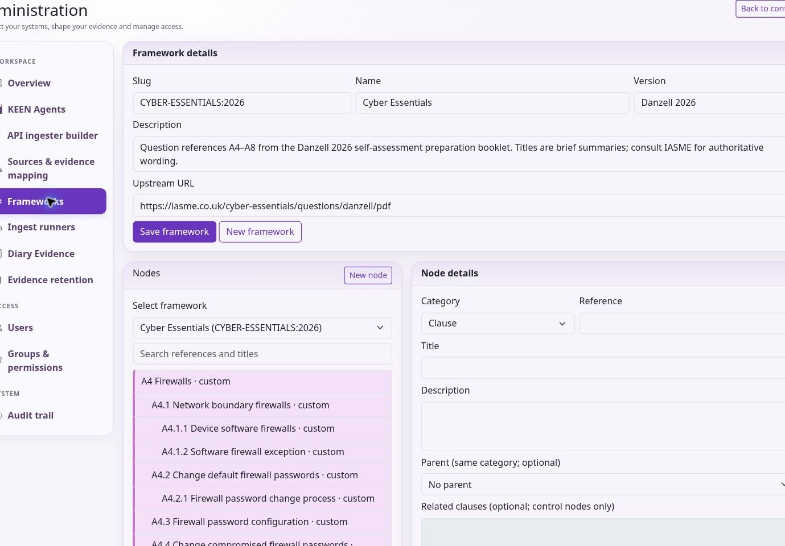

Using KEEN
Frameworks, scope and shared evidence
Chapter 2 of 15
Frameworks, controls and scope
Manage frameworks in the application

An administrator opens Admin → Frameworks. Use Select framework to edit an existing framework or New framework to create one. Enter a stable slug, name, version, description and optional upstream URL, then choose Save framework. A slug is an identifier: the editor does not rename an existing framework’s slug.
Choose New node to add a Clause, Control or Custom node. Supply its reference and title, then its description, optional parent of the same category, upstream URL, sort order and In scope setting. Control nodes can link to related clauses. Choose Save node and verify the item in the appropriate framework view.
Select a node in the searchable tree to edit it. Its reference and category identify it; create a new node if those need to change. Parent relationships must remain valid. Deleting a node can be blocked by child nodes, clause links or evidence mappings. Review those relationships before attempting deletion and consider marking an item out of scope when historical relationships must remain.
Routine framework management takes place here. Create and maintain frameworks directly in the editor. Use upstream links for authorised guidance and avoid pasting licensed standard text unless your organisation has the right to store and share it.
Controls, clauses and applicability
Controls describe the practices you assess. Open a control to inspect its details, scope justification, linked evidence, risks, related ISMS entities and visualisations. Use the evidence links to check dates, sources and relevance alongside the totals.

Clauses describe management-system requirements and can form a hierarchy. A clause can link to controls and supporting evidence, PESTLE(E) items, interested parties and ISMS entities. Review both direct evidence and the context supplied by linked controls.
The Statement of Applicability brings scope decisions and relationships together for the selected framework. Explain exclusions and record the basis for inclusion. Keep these explanations current when the business, its risks or its framework changes. Use evidence mappings and risk links to inform your applicability decision.
Design a framework and make scope decisions
A framework is the catalogue against which you organise assurance. Controls describe practices; clauses describe requirements and their hierarchy. The same evidence can map to several frameworks. Switching framework changes the view and its targets, while keeping the same underlying risks and events.
- As an administrator, open Admin → Frameworks. Choose an existing framework, or New framework. Enter a stable slug, name, version, description and, where appropriate, an upstream URL. Save framework metadata first.
- Choose New node. Select Clause, Control or Custom, then enter the reference and title. Add description, sort order and upstream link. Choose a valid parent of the same category when constructing a hierarchy.
- For controls, select related clauses. These relationships allow a clause review to incorporate relevant control context. Evidence mappings separately connect events to controls.
- Set In scope deliberately. Open the resulting control or clause to check the reference, title and relationships. Use the searchable tree to find and edit an existing node.
- Review the Statement of Applicability. Record why requirements apply and why exclusions are justified. Revisit scope after a material change to services, suppliers, assets or obligations.
Keep slugs, references and categories stable: they identify relationships throughout the application. Renaming the displayed title is different from changing identity. Where identity must change, create the replacement deliberately and review links. Deletion can be blocked by children, clause relationships or evidence mappings; marking a node out of scope may preserve the required history.
Use the supplied KEEN-AF controls as editable working material for your assurance programme. Follow upstream links to authorised source material for other standards. Assess control effectiveness by checking the time period, the event outcomes, the assessment rationale and whether the evidence actually addresses the requirement.
Reuse evidence across frameworks
KEEN includes 92 frameworks: 88 catalogues from Open Security Architecture (OSA), plus the KEEN Assurance Framework, UK Digital Verification Services Trust Framework, Cyber Essentials and Risk Ledger. The OSA catalogues include ISO/IEC 27001:2022, SOC 2 and the HIPAA Security Rule. Administrators choose the enabled frameworks in Admin → Frameworks and can edit their definitions and controls. KEEN Assurance is enabled by default.
A mapping rule can target controls or clauses in several frameworks. For a shared requirement, an administrator can also approve a directed cross-framework control relationship and record why the requirements overlap. The receiving control can then show evidence from the linked source control. Review that rationale and the actual evidence when assessing the receiving requirement.
Browse related controls by framework
On a control detail page, use the framework selector in Related controls to choose the catalogue you want to examine. The list shows the related controls for that framework, with pagination for longer lists. Expand a relationship to inspect its rationale, coverage and gaps. OSA relationships use shared NIST control references to identify overlap. Assess that overlap against your organisation’s scope and the receiving requirement.
Evidence follows one direct cross-framework relationship. KEEN counts each event once in the receiving control’s evidence totals. Read the underlying event and relationship rationale when assessing whether it supports the requirement.